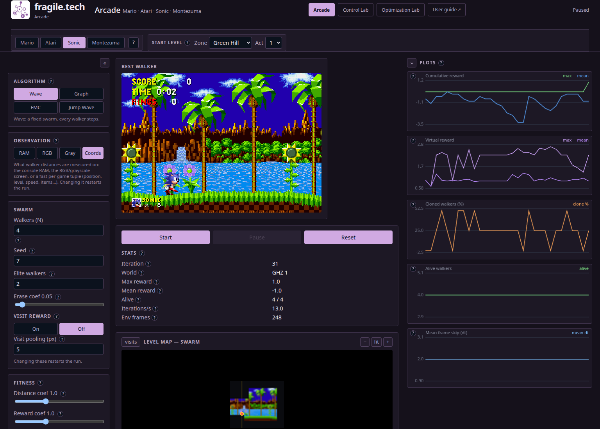
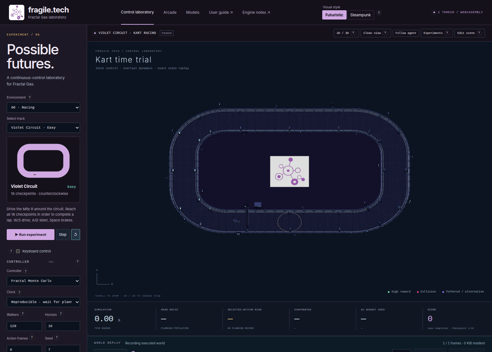
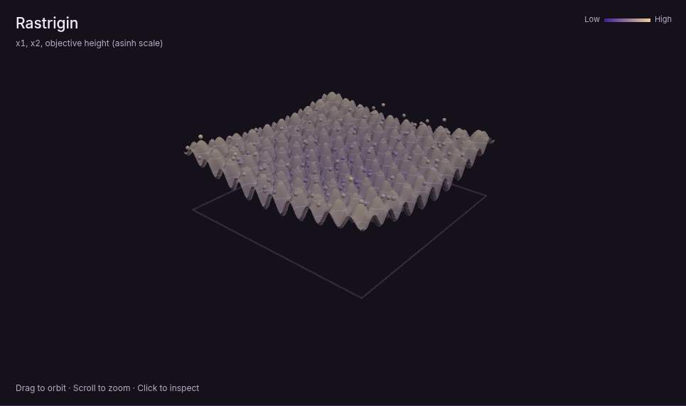
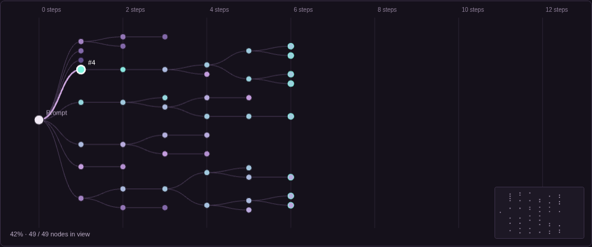

Arcade Lab
Open Arcade LabWatch search algorithms explore classic games and plan their next move.
Fractal algorithms explore many possibilities at once, balancing promising results with diversity. Watch them play games, control simulated worlds, optimize functions, and generate text.

Watch search algorithms explore classic games and plan their next move.

Explore rockets, racing, and cooperative tasks with planners you can compare.

Watch swarms search mathematical landscapes for better solutions.

Demo generationExplore competing text continuations and inspect how search selects the next branches.